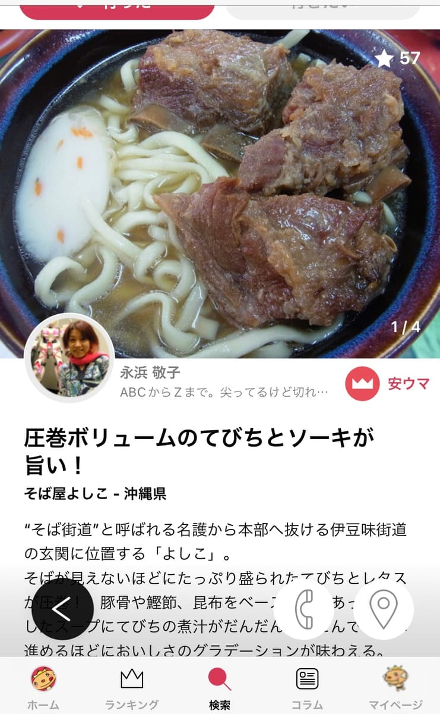
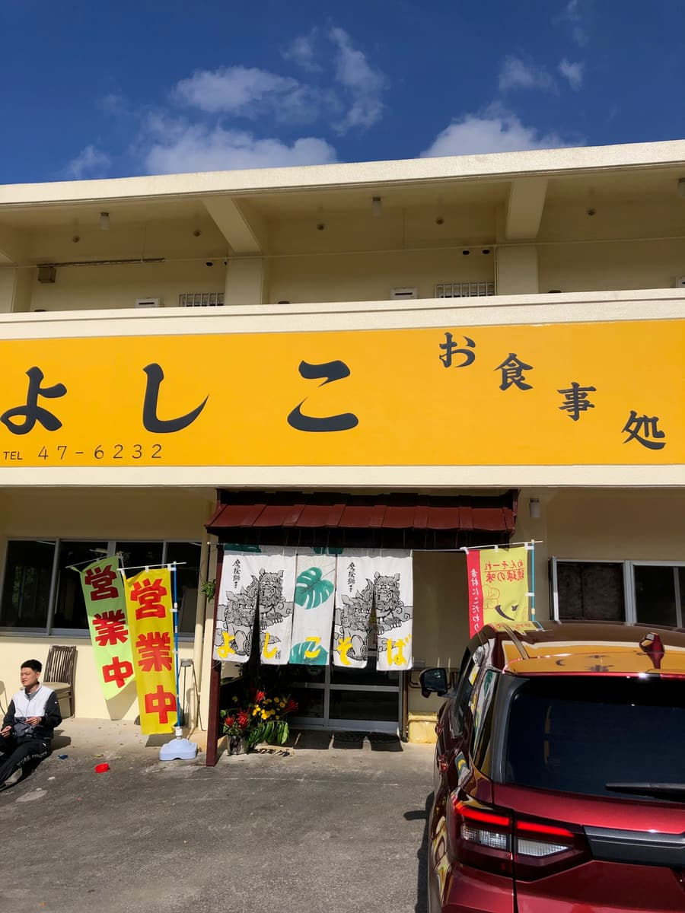
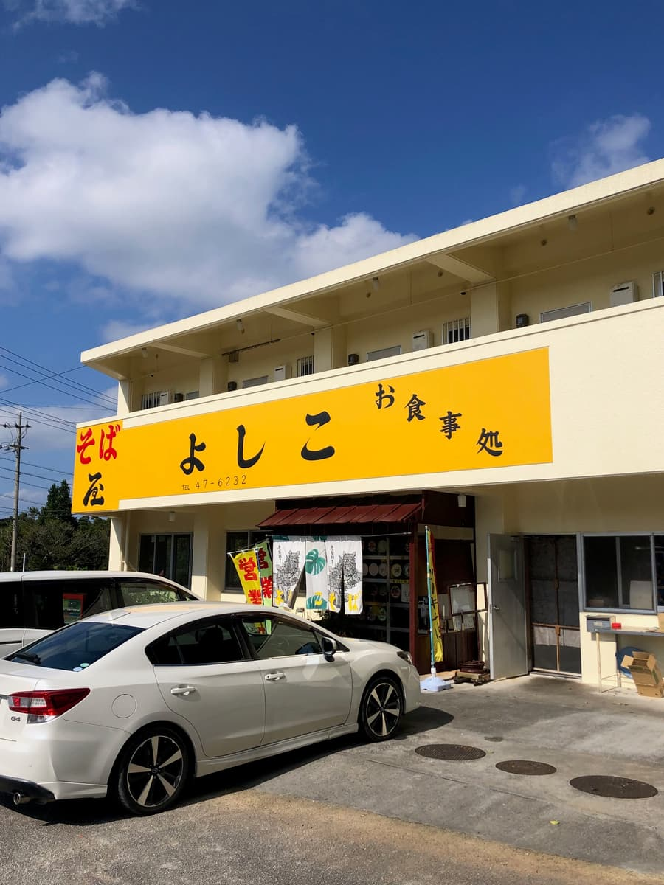
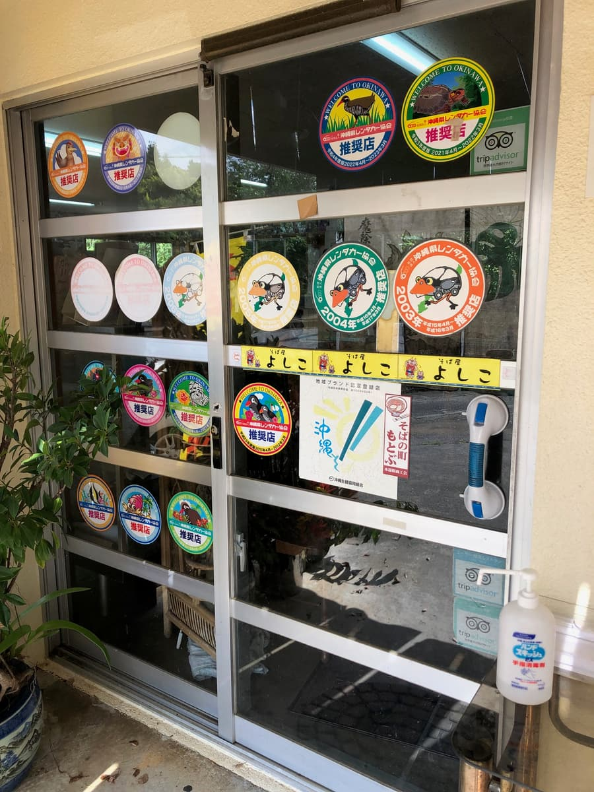
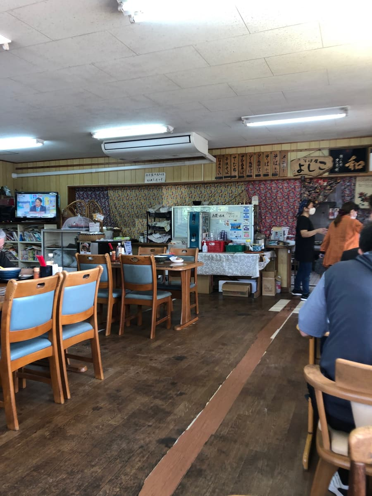
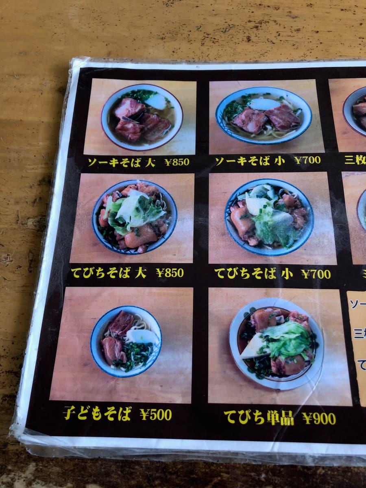
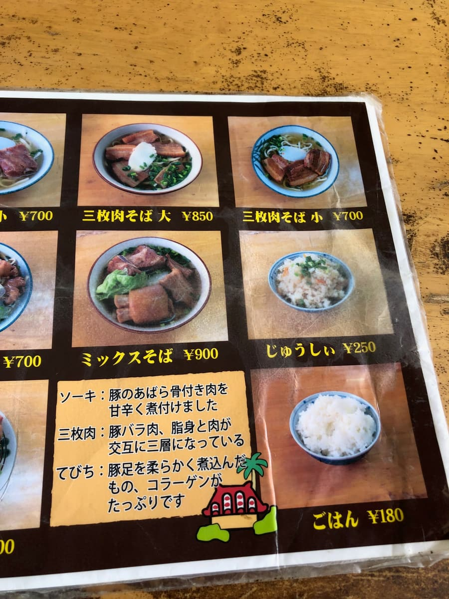
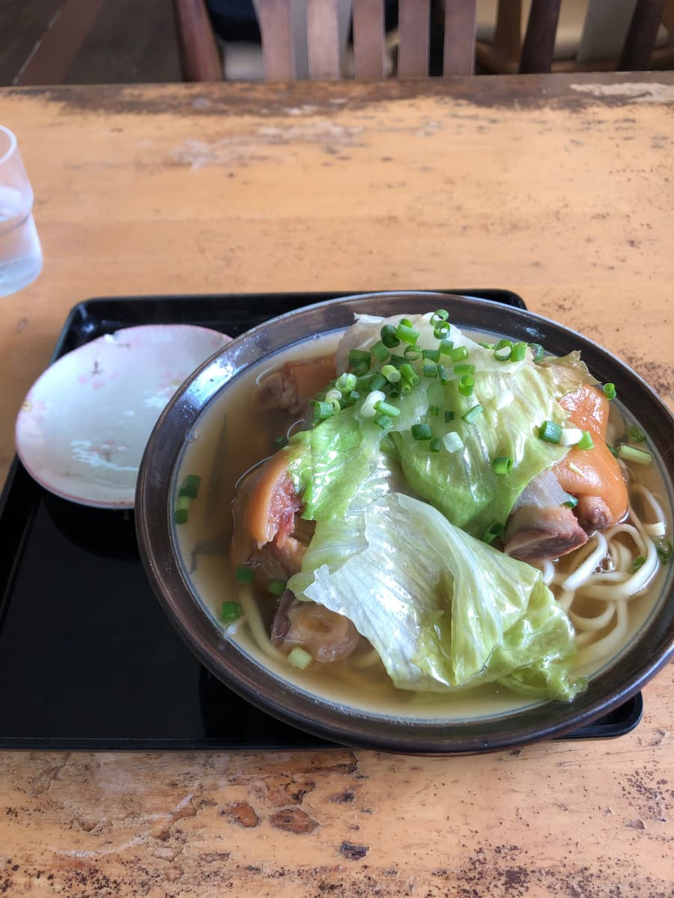
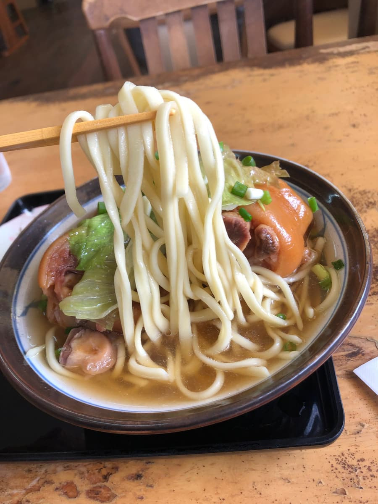

这篇文章是用AI（Claude 3.7 Sonnet）写成后再由我部分补写的哈哈🍜✨
2024年11月吃的😄 这次要介绍位在本部町伊豆味的「面屋吉子」。这家店也曾在堀江贵文（Horiemon）的TERIYAKI App上被介绍过，是我之前就很好奇的店🔍




这家店位在县道84号沿线，是长年受到在地人喜爱的老字号冲绳面店。以鲜艳的黄色招牌为标志，写着「吉子面」的暖帘在风中飘扬🏮
走进店里，飘着怀旧的气氛，墙上贴满了许多照片和签名。在地客人和观光客络绎不绝，这天也有很多人来店呢😄

看了菜单，排骨面、猪脚面、三层肉面等经典菜色一字排开。有附照片的菜单很好懂呢👍


这次点了堀江贵文TERIYAKI App上介绍过的「猪脚面」。「提比奇」指的就是猪蹄，富含胶原蛋白，是也很受女性欢迎的配料🐷
等了一会儿，「猪脚面」就送来了。首先是视觉上的冲击！就像我在「不输推荐店的冲绳面店」里介绍过的名护市大北「大城面」一样，特色是上面铺着莴苣🥬

照惯例先从汤头品尝。这家店的汤头是猪骨、柴鱼、昆布的综合高汤，柴鱼味稍重，味道很温和😋

接着吃面。中粗的直面、偏软的面条，和汤头很融合，普通好吃🍜
然后是配料「猪脚」，大块的猪脚竟然放了3块，份量超足！经过长时间炖煮，肉软嫩到入口即化。满满的胶原蛋白，感觉对皮肤也很好呢✨
吃完后，心里涌起一股莫名怀念的温暖感觉。是一碗让人明白为什么能长年受到在地人和观光客喜爱的面😌
顺带一提，这家店在堀江贵文的TERIYAKI App上，猪脚面被列为推荐，虽然普通好吃，但我觉得糸满市潮崎的「南部面」的猪脚面比这里更好吃🎵
评分（9分/15分）：普通好吃。是很受在地客和观光客欢迎的店，去本部町一带的时候，要不要顺道来看看呢？😊
面：★★★☆☆（3）
汤头：★★★☆☆（3）
配料：★★★☆☆（3）